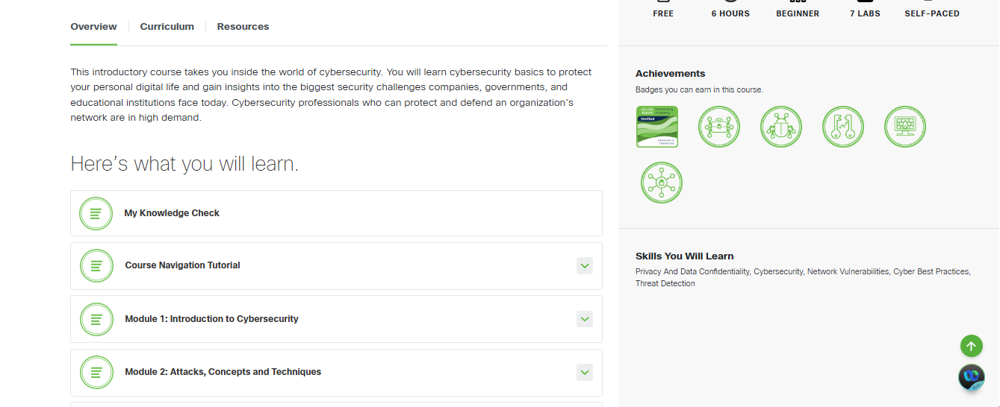
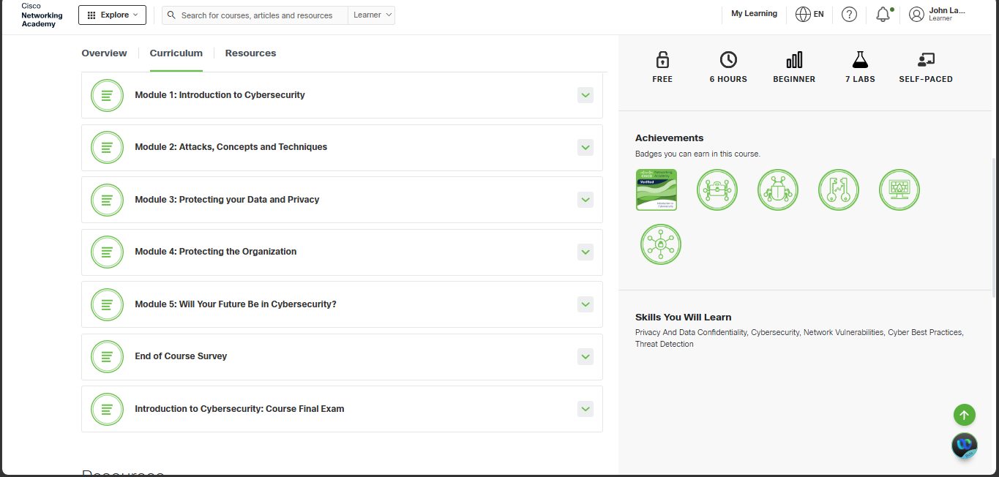
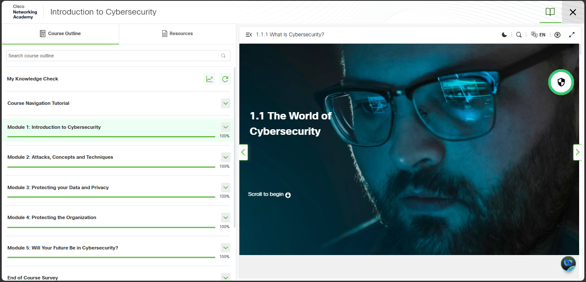
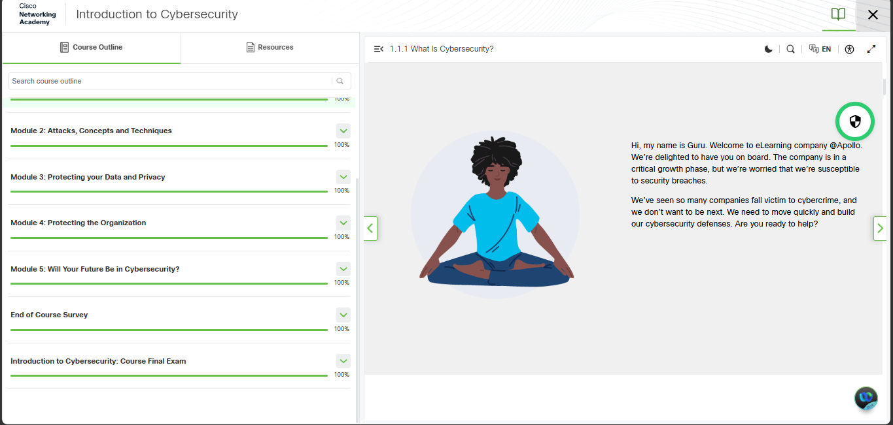
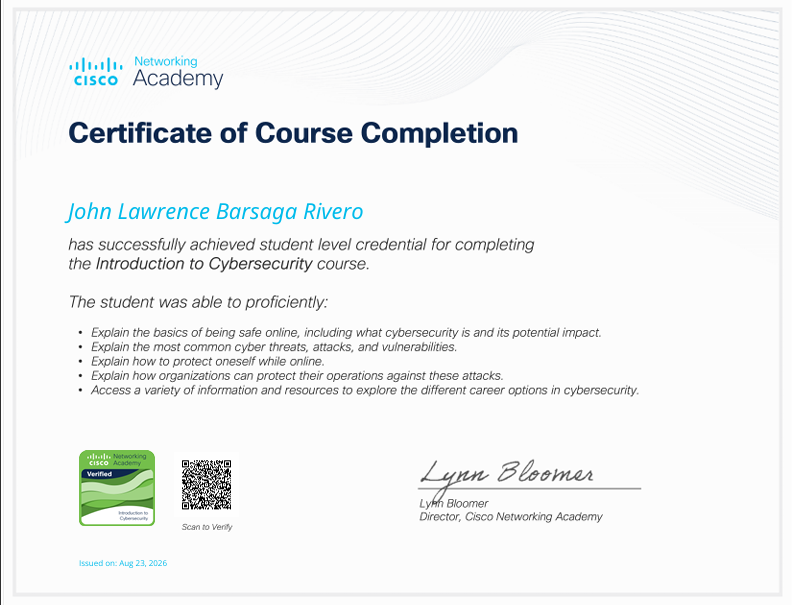

I completed the Introduction to Cybersecurity course from Cisco Networking Academy on August 23, 2026. This course helped me understand the basic concepts of cybersecurity and why it is important in our everyday use of computers, mobile devices, and the internet.
During the course, I learned about different types of cyberattacks, security threats, and vulnerabilities. I also learned how to protect my personal information and privacy when going online. The lessons taught me some simple but important practices, such as using strong passwords, being careful with suspicious messages or links, and protecting sensitive information.
The course also included different modules, activities, laboratory exercises, and a final examination. These activities helped me understand the lessons better because I was able to apply what I learned instead of just reading the information.
One of the things I found useful was learning how cybersecurity is also important for organizations. I learned that companies need to protect their systems, data, and operations from different cyber threats. The course also introduced different career opportunities in cybersecurity, which gave me a better idea of how cybersecurity is connected to the field of Information Technology.
Overall, completing this course was a good learning experience for me. I gained useful knowledge about cybersecurity that I can apply in my studies and in my daily use of technology. It also made me more aware of the importance of being careful and responsible when using the internet.





View PDF Verify My Badge